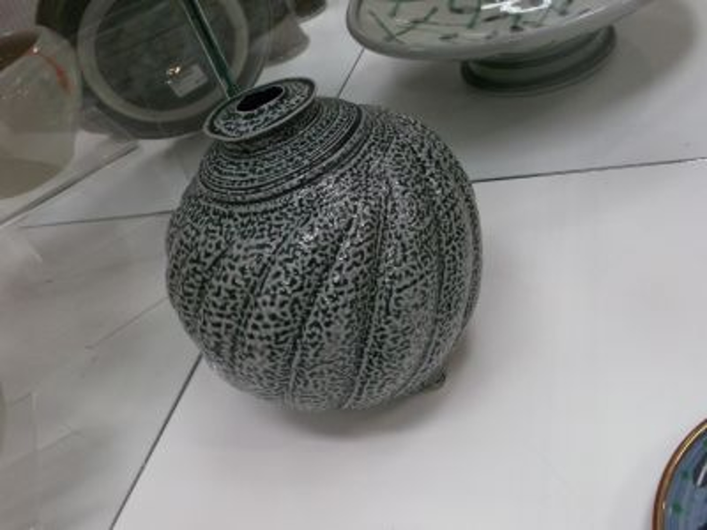
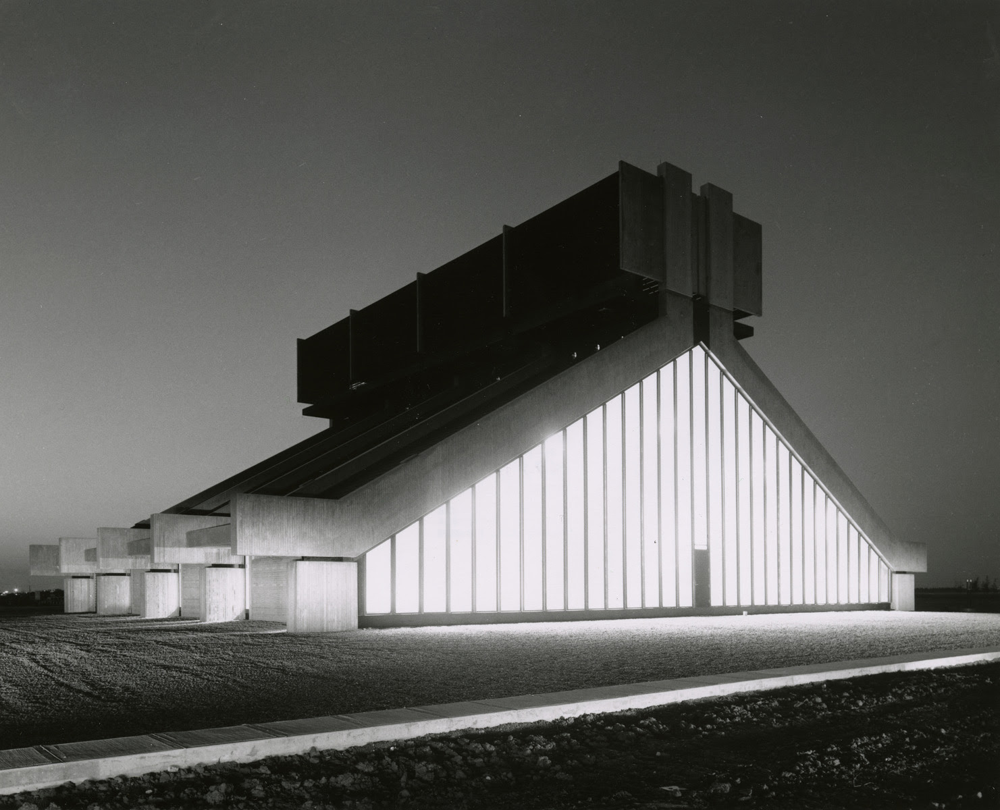
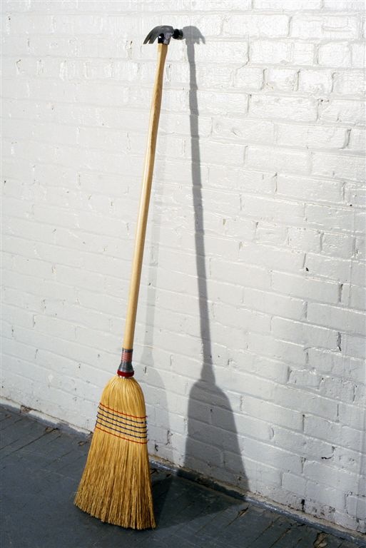

Saskatchewan Artists
Artists presented here were born, raised, or live in Saskatchewan, Canada.

Mel Bolen
Pot

Victor Cicansky
Bench Corn

Clifford Wiens
University of Regina Heating and Cooling Plant

A Section
- Ryan Arnott
- Emma Lake Artists' Workshops is a world renown workshop hosted by artists from all over the world!
B Section
- Heather Benning Rural Pyromaniac of Dolls
- Lorne Beug archeology meets prairie art, unbelievably.
- Ronald Bloore Mr. White on White.
- Mel Bolen Humboldt inspired ceramics.
- Robert Boyer broke political art standards through blankets.
- Michael Bromley
C Section
- Victor Cicansky Ceramic gardener with the fruits of bronze.
- David Clausen inspired by paranoia but calm and peaceful.
- Alex Crease a strong environmental conscience challenges the viewer while leaving them with options of hope.
F Section
- Joe Fafard cows lead farm animals and politicians in bronze and clay.
- Charley Faffero the kiln master of Meacham.
- Amber Fyfe body, fantasy and nature as spectacle. Don't forget the teapots.
G Section
- Grace Garden works from saw blades to glass etchings.
- David Garneau Metis roots show multiple influences.
- David Gilhooly mastermind of FrogWorld.
- Brian Gladwell Furniture Magic.
- Jesse Goddard Regina sculpturer with wood and metal.
- Ted Godwin is the youngest of the Regina Five.
H Section
- Folmer Hansen grandfather of Saskatchewan pottery.
- Iris Hauser Surrealism, portraiture and the gang.
- Joel Hustak Digital Dragon Master.
I Section
- Roger Ing life, art and the hamburger converge in the expression of the short order originator. Pop culture keeps the Rogerisms as a blue chip investment hedged against boorishness.
K Section
- Agustus Kenderline the deep footing supporting Northern Saskatchewan landscape. The father of Emma Lake.
- Andrew King a circus picture is worth a thousands words.
- Dorothy Knowles a wonderful landscape painter from Saskatoon, interprets beauty in nature.
- William Kurelek a pioneer of art therapy.
L Section
- Marilyn Levine the leather potter.
- Earnest Lindner paints details on the northern forest floor.
- Anthony Linklater an Aboriginal artist honours nature and animals using art for healing.
- Kenneth Lochhead Kingpin of the Regina Five.
- David Loran Fine Art on the outer walls, stationary or otherwise.
M Section
- Pete Makarow a modern day urban Folk artist. His art is FUN and very original.
- Terrace John Marner digital images and acrylic paintings strongly influenced by Buddhist philosophy and meditation practice.
- Ahasiw Maskegon-Iskew Sometimes the situation in which he finds himself writing about First Nations art feels to him similar to the situations in which First Nations people found themselves in seventeenth-century New England.
- Art McKay is the Guru of the Regina Five.
- Scott McLeod continues to carve out his place in the art world. Being a stone carver from Radville, Saskatchewan, his work reflects what he gathers from life. In all of Scott's carvings, life breathes, the skies open, and you can feel the ground beneath your toes.
- Joni Mitchell "I'm a painter first, and a musician second." - Joni Mitchell.
- June Mitchell the matriarch of granny poetry.
- Gerald Morton uses a traditional approach to using local clay and materials in the craft of pottery.
- Douglas Morton is a member of the Regina Five whose paintings deal with colour and shape.
- Wynona Mulcaster Saskatchewan landscape painter, turning 100 in 2015.
P Section
- Wendy Parsons create pieces with humour, joy, and optimism.
- Maija Peeples-Bright A Latvian born artist inspired by the "California Funk Movement" who lives and expresses her artwork and style in all that she does.
- William Perehudoff showed Saskatchewan the value of Abstract Expressionism.
- Edward Poitras a Regina born aboriginal sculptor, also known for his paintings and drawings, whose art is exhibited around the world.
Q Section
- There are no artists here, yet.
R Section
- Susan Rankin makes flowers and objects of beauty out of glass
- Anita Rocamora is a ceramist from Meacham who intimately links her ideas and materials into organic vessels.
S Section
- Allen Sapp a Cree painter from the Red Pheasant Reserve. Allen paints memories from his past.
- Gerald Saul An abstract film maker, using film to to interrogate and express issues of personal identity, seeking ways to explore these issues both through the content and the structure of film.
- Ward Schell Moose Jaw's Mural Man
- Jack Severson his willingness to follow his intuition; his openness to risk and even the possibility of failure is integral to the work. The drawings and collages here have no obvious narrative order, nor do they suggest any architectonic plan.
- Mark Sexton works at the University of Regina with the Printer Services and creates a large variety of colourful, thoughtful artwork, that has been an influence in his life.
- Christine Shaw the boundary of the environment, the content of the space, the movements of the beholder and the fiber of self.
- Inglis Sheldon-Williams is one of Saskatchewan's early artists. His work portrays the vastness of the prairies.
- Gerri Ann Siwek is a talented artist who uses many materials to create her artwork of both the natural and the paranormal.
- Dmytro Stryjek Ukranian railroader, paints expressive visual pieces.
- Jack Sures a Canadian painter that is well known for his mural commissions in Saskatoon at the Sturdy-Stone Centre.
T Section
- David Thauberger
- F. Wayne Tunison an industrial post-modernist, dealing with the concepts of self in a world of technological change presents processes and meditations ranging from the bible to urban reconstruction. Tunison works in various media including multimedia.
U Section
- There are no artists here, yet.
V Section
- Marlo V the Fine Art impressario of 13th Avenue.
- Jon Vickers touched the hearts of Canadians with his role in Opera
W Section
- Sean Whalley a pursuer of "old world technologies" such as blacksmithing and coopering, using discarded lumber to create the images using displacement.
- Clifford Wiens Architectural limb of the Regina Five
- Zane Wilcox is a ceramic artist. He makes amazing portal sculptures.
X Section
- There are no artists here, yet.
Y Section
- Dyson Yobb a Comic Writer from rural Saskatchewan, who has worked for many companies, and has made his own comics.
- Russell Yuristy whimsical imagination on the playground
Z Section
- There are no artists here, yet.